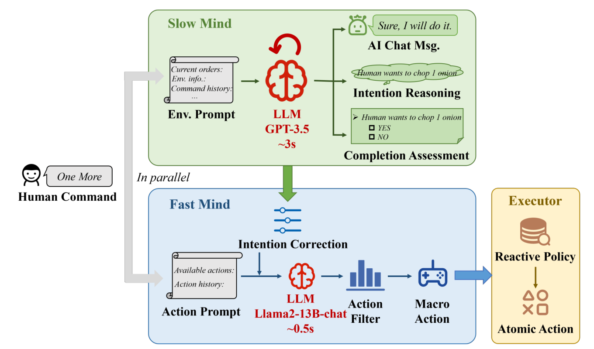

게임콘텐츠캡스톤디자인 · 더미 · 2026.09.19
인간–AI 협력 퍼즐
말을 듣고
함께 행동하는 AI
대화 AI + 행동 AI
두 AI와 실행 코드의 역할
대화 AI↔연결 코드↔행동 AI→엔진 실행
계층형 AI 에이전트 구조 기반 실시간 인간-AI 협동 게임 시스템 개발 및 성능 분석
← → 슬라이드 이동 · F 전체 화면 · N 발표자 노트
각 장의 ‘재생’과 ‘다음 단계’로 정보 흐름을 확인합니다.
01 · AI는 두 개
대화 AI와 행동 AI를 코드로 연결한다
사람플레이어마이크 · 스피커
AI ① · GPT-Live대화 AI듣기 · 말하기
일반 코드언리얼 실행기관찰 · 이동 · 장치
일반 코드조정기 + 기억상태 · 작업 · 검증
AI ② · LLM 한 개행동 AI선택 · 계획 · 재판단
조정기·기억·실행기는
우리가 만드는 프로그램
WebRTC 음성게임 JSON검증된 행동 / 실행 결과
02 · 공식 API
GPT-Live의 입력은 두 통로로 나뉜다
음성마이크 ↔ WebRTC 오디오 트랙 ↔ GPT-Live
이벤트·문맥Node 서버 ↔ sideband WebSocket ↔ 같은 세션
- 마이크 허용 · 오디오 트랙 추가
- 데이터 채널 생성 · SDP offer
- 서버가 Live 세션 생성
- SDP answer 적용 · 시작 이벤트 확인
- 서버가 같은 세션에 sideband 연결
03 · 입력과 결과의 구분
게임 JSON과 Live 문맥은 전달 형식이 다르다
04 · 게임 상태 추상화
AI가 아는 정보만 골라 전달한다
3D 공간의 격자 표현 · 전체 상태는 디버깅·채점용
플레이어의 설명은 출처와 확인 여부를 함께 저장한다.
보이지 않는 레버의 존재와 정답을 자동으로 알려주지 않는다.
05 · 현재 행동 판단
가능한 행동 중 하나를 고르거나 질문한다
파란 발판 유지 hold_blue
노란 발판 유지 hold_yellow
플레이어에게 질문 ask_player
현재 위치에서 대기 wait
→
행동 AI같은 LLM으로 선택·계획
→
프로그램은 가능한 행동을 정의하고, 모델은 상황에 맞는 선택을 한다.
06 · 언리얼 행동 실행기
한 번 받은 행동을 여러 프레임에 걸쳐 수행한다
07 · 같은 행동 AI의 계획
행동 AI가 순서와 실행 조건도 정한다
“반대편에 문을 고정하는 레버가 보여.”
AI발판 유지
사람이 지나갈 동안
현재 작업 지속
확인되지 않은 장치·효과는 질문이나 조건으로 남긴다.
08 · 두 AI와 엔진의 독립 진행
행동 AI가 판단하는 동안에도 대화는 이어진다
설명용 가상 시간 · 실측 결과 아님
대화 AI는 소통, 행동 AI는 판단, 엔진은 실제 동작을 맡는다.
09 · 지시 변경
오래된 응답이 새 지시를 덮어쓰지 않게 한다
작업 8“노란 발판으로 바꿔.”
현재 목표 갱신 10 · 협력 행동의 시간 제어
두 AI가 협의와 판단을, 엔진이 시각을 관리한다
준비 확인 → 엔진 카운트다운 → AI 예약 실행 + 사람의 실제 입력
11 · 상황에 맞는 제안
진행이 막힌 순간에 해결 방법을 제안한다
정상적인 대기·유지는 막힘으로 세지 않고, 질문과 제안의 중복을 억제한다.
12 · 자체 구현과 검증
세 영역의 구현 결과를 같은 시나리오로 비교한다
①게임·상태 추상화
퍼즐과 관찰 필터
객체·관계·행동 JSON
숨은 정보 누출
전달량 · 추출 시간 ②두 AI 연결·판단
대화 AI와 행동 AI 어댑터
지시·상태·출력 설계
행동 적합률
모델 지연 · 사용량 ③조정 코드·실행
호출·버전·취소 제어
행동 실행과 로그
협력 성공률
행동 지연 · 취소 오류 지시 입력 확정────────────→첫 올바른 행동 시작
13 · 연구 근거
HLA를 참고해 대화 AI와 행동 AI를 나눈다

HLA 원문 Figure 2 · 왼쪽 그림은 참고 논문의 구조논문에서 참고하는 원리
언어 판단과 실제 실행의 역할 분리
실행 결과를 다음 판단에 반영
우리의 AI는 두 개
대화 AI: 실시간 음성 소통
행동 AI: 선택·계획·재판단
조정기·실행기: 일반 코드
14 · 구현 순서
발판 하나에서 전체 연결을 먼저 입증한다
현재 기록음성 → 문자 출력
Live 세션·엔진 연결 검증 기록
상담에서 음성 출력 시연 기록
첫 통합상태 → 판단 → 발판
대화 AI + 행동 AI 하나
검증된 이동·유지 결과 회신
연구 구현두 AI의 협력 품질 검증
유지·취소·같은 AI의 재판단
행동 모델·상태 표현을 비교
협력 성공률을 유지하면서
올바른 행동을 더 빨리 시작할 수 있는가?
이 자료의 애니메이션은 설계 설명용입니다. 협력 퍼즐 완주와 모델 성능은 실제 실행으로 검증합니다.